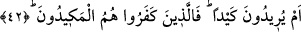

Kâşifî şöyle demiştir: Onlar Peygamberimiz’in kıyâmet ve yeniden dirilme konusunda
verdiği haberin bâtıl olduğunu ve yine; “senin ölümün ne zaman olacak biz biliriz” diye
yazarlardı.
42. Yahut bir tuzak mı kurmak istiyorlar? Asıl tuzağa düşecek olanlar, inkâr
edenlerdir.
“Yoksa bir tuzak mı kurmak istiyorlar?” Yâni bu bâtıl sözleriyle yetinmeyip de
bunun yanı sıra sana bir tuzak ve kötülük mü tasarlıyorlar? Kâfirlerin kurmak istediği bu
tuzak, onların Dâru’n-nedve’de toplanıp Allah’ın Rasûlü’nü bir hile ile öldürmeyi,
hapsetmeyi veya Mekke’den çıkarmak üzere anlaşmalarını ifâde eden tuzaktır. “Keyd”,
içinde güzellik yahut çirkinlik de bulunsa başına gelen kişiye kötülüğü, zararı dokunan
tuzak anlamındadır. Atıftaki istifham takrîr için olup mâtûfu aleyhte inkâr mânâsını taşır.
Bazı ulemâ “keyd”in bir nevi hilekârlık olduğu kanâatindedir.
Tâ’rîfât’da “keyd”in başkasına gizli olarak bir zarar verme irâdesi içinde olmak diye
tâbir edilmesinin yanı sıra bunun ahlâkî anlamda “kötü çare“ mânâsına geldiği ve
toplumun amellerinin karşılığının ancak hakkâniyet ölçüsünde tedbîr-i ilâhiyle olduğu
belirtilir.
Sa’di Müftî de âyet-i kerîmede mezkûr olan “keyd”in, gaybden haber verme olduğunu
söyleyerek buna sebep olarak da bu sûrenin Mekkî olduğunu, tuzağın da hicret
gecesinde vukua geldiğini beyân eder. Şâyet Tûr suresinin bu hicret gecesinde nâzil
olmuş olduğu iddiâ edilirse biz de İbn Abbas’dan sâbit olan bir rivâyete göre bu
surenin Mülk v.b. surelerden önce ama hicret gecesinden sonra Mekke’de nâzil
olduğunu söyleriz.
“Asıl tuzağa düşecek olanlar, inkâr edenlerdir.” Burdaki hasr, izâfidir. Anlamı;
tuzakları kendi başlarına dolanacak olanlar veya vebâli, tuzak kurmayı murad ettikleri
kişilere değil de kendilerine âid olacak kimseler onların yine kendileridir. Zira kavlî ve
fiilî olarak, hüccetle ve kılıçla muzaffer ve galip olacak olan O’dur. Yahut tuzaklarında
kendilerine galebe çalacak olan yine O’dur.
“Keyd” kelimesi, hile kökünden gelmektedir. Âyet-i kerîmenin bu cümlesinden murad,
müşriklerin Bedir’de kurdukları tuzağın öldürülmeleri şeklinde kendi başlarına
geçmesidir ki bu, sûrede geçen “em” kelimesinin adedi olan onbeş senenin bitimi gibi
kısa bir müddettir. Zira Bedir gazvesi hicretin ikinci yılında, nübüvvetin on beşinci
senesinde vukû’ bulmuştur.